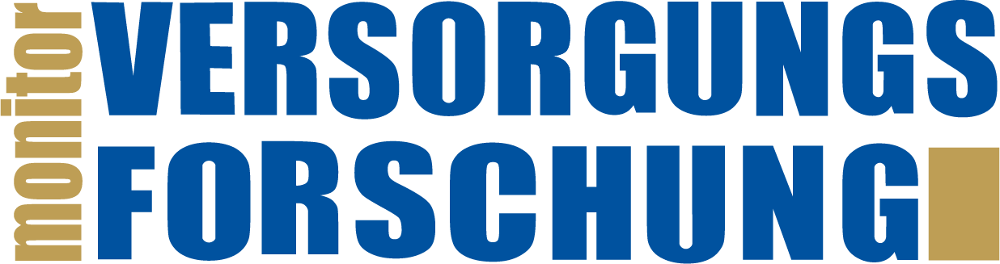

Was die Beteiligten davon haben
Studierende
Eine zitierfähige Veröffentlichung mit DOI – vielleicht die erste – und ein Publikum aus Wissenschaft und Versorgungspraxis. Mit einem Profil werden sie auf Wunsch von Hochschulen, Arbeitgebern, Personalvermittlung und Praxispartnern gefunden.
Hochschulen und Studiengänge
Sichtbare Ergebnisse der eigenen Lehre, vergleichbar über Standorte hinweg, auch nach innen: Abschlussarbeiten sind selbst an der eigenen Hochschule kaum auffindbar.
Das Fach
Befunde aus Qualifikationsarbeiten, die sonst außerhalb der Prüfungskommission kaum jemand liest. Im besten Fall Anregungen für neue Arbeiten und für die Nachwuchsförderung.
So kommt eine Arbeit ins Portal
Vier Schritte, vier Beteiligte.
1Einreichen
Die Studierenden reichen ihre Arbeit mit einer Kurzfassung nach festem Schema ein.
Dauer: etwa 15 Minuten
2Bestätigen
Die Erstbetreuung bekommt eine E-Mail. Mit einem Klick bestätigt sie, dass die Arbeit mindestens mit [Mindestnote] bewertet wurde, dass die Kurzfassung die Arbeit zutreffend wiedergibt und dass sie die Arbeit für das Portal empfiehlt. Sie kann auch um eine Überarbeitung der Kurzfassung bitten.
Dauer: meist wenige Tage
3Prüfen
Die Gruppe der Hochschullehrenden im DNVF prüft, ob die Arbeit zum Portal passt, ob die Kurzfassung alle Teile des Schemas enthält und verständlich ist und ob Methode und Ethikvotum nachvollziehbar genannt sind. Die Arbeit selbst liest das Gremium nicht. Fehlt etwas, gibt es eine Rückmeldung zur Überarbeitung.
Dauer: in der Regel [X] Wochen
4Veröffentlichen
Wir vergeben eine DOI über Crossref, erstellen eine eigene Seite im Portal und tragen die Arbeit in die passenden Knowledge-Hubs und deren Newsletter ein.
Dauer: wenige Tage
Insgesamt: Von der Einreichung bis zur Veröffentlichung vergehen in der Regel [X] Wochen.
Wie die Qualität gesichert wird
Jede Arbeit ist bewertet. Ihre Erstbetreuung kennt die Arbeit und bestätigt nach dem Einreichen Note, Empfehlung und dass die Kurzfassung die Arbeit zutreffend wiedergibt. Danach prüft die Gruppe der Hochschullehrenden im DNVF, ob die Arbeit zum Portal passt und ob die Kurzfassung vollständig nach Schema und verständlich ist. Die Arbeit selbst liest das Gremium nicht. [Aufgabenteilung mit dem DNVF abstimmen]
Wer dahintersteht

Monitor Versorgungsforschung
Technik, Redaktion und Reichweite über die Knowledge-Hubs.
Deutsches Netzwerk Versorgungsforschung (DNVF e. V.)
Die Gruppe der Hochschullehrenden wählt die Arbeiten aus und verantwortet die Kriterien.
Ausblick
Nachwuchspreis beim DKVF
Einmal im Jahr sollen herausragende Arbeiten aus dem Portal beim Deutschen Kongress für Versorgungsforschung ausgezeichnet werden. Details folgen.
Kontakt
Haben Sie Fragen oder Anregungen? Dann schreiben Sie uns an info@m-vf.de.